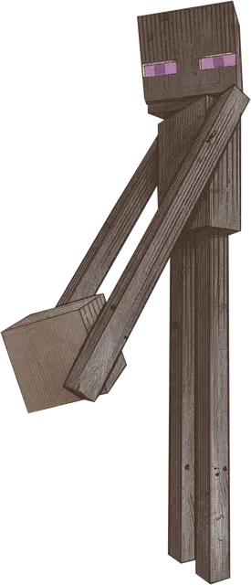

Странник Края
Enderman
Средняя Аберрация, хаотично-нейтральная

Класс Доспеха 14
Хиты 78 (12к8 + 24)
Скорость 40 футов
| мод | спас | ||
|---|---|---|---|
| СИЛ | 15 | +2 | +5 |
| ЛОВ | 18 | +4 | +4 |
| ТЕЛ | 15 | +2 | +5 |
| мод | спас | ||
|---|---|---|---|
| ИНТ | 10 | +0 | +0 |
| МДР | 18 | +4 | +4 |
| ХАР | 11 | +0 | +0 |
Навыки Восприятие +7, Выживание +7, Скрытность +7
Сопротивление урону некротическая энергия
Чувства тёмное зрение 60 футов, пассивное Восприятие 17
Языки Язык Края
Опасность 6 (2300 опыта)
Бонус мастерства +3
Особенности
Ускользающая телепортация. Всякий раз, когда он получает урон или становится целью дальнобойной атаки, странник может телепортироваться вместе со всем снаряжением, которое он носит или несёт, в незанятое пространство, которое он может видеть в пределах 20 футов от себя (никаких действий не требуется). Если этот эффект срабатывает при дальнобойной атаке, странник телепортируется непосредственно перед попаданием атаки, из-за чего атака промахивается. Эта особенность подавляется, пока странник недееспособен.
Имплозия. Когда хиты странника падают до 0, он умирает, а его тело взрывается. Бросьте 1к10. При броске 9 или меньше странник не оставляет следов. При броске 10 странник оставляет после себя светящуюся пурпурную сферу, называемую жемчугом Края [ender Pearl], стоимостью 500 зм. Существо может бросить жемчужину на расстояние до 60 футов; если жемчужина приземляется в незанятом пространстве, достаточно большом, чтобы вместить существо, существо телепортируется в это пространство вместе со всем снаряжением, которое оно носит или несет, и жемчужина исчезает.
Чувствительность к солнечному свету. Находясь на солнце, странник совершает броски атаки с помехой.
Восприимчивость к воде. Странник получает 1 урона холодом за каждые 5 футов, которые он проходит в воде, за каждый галлон воды, вылитый на него, или каждый раз, когда он начинает свой ход под дождем.
Действия
Мультиатака. Cтранник совершает две атаки Размашистым ударом.
Размашистый удар. Рукопашная атака оружием: +7 к попаданию; досягаемость 10 футов, одна цель. Попадание: 8 (1к8 + 4) дробящего урона плюс 9 (2к8) урона некротической энергией.
Описание
Странники Края — высокие, черные, двуногие существа с длинными тонкими конечностями и пронзительными фиолетовыми глазами. Фиолетовые частицы то появляются, то исчезают вокруг них. Странники Края нервны и загадочны, их действия почти невозможно интерпретировать.
Странников Края особенно привязаны к Краю, где они собираются большими группами. Они необычные гости в других измерениях, хотя чаще появляются парами в таких своеобразных местах, как искажённые леса Нижнего мира. Они избегают солнечного света и страдают от воды, включая дождь. Когда странник Края становится целью дальнобойного оружия или получает урон, он телепортируется в более безопасное место поблизости и издаёт характерный звук «вуп» в месте назначения.
Странники Края не отличаются хищничеством. Когда Гуманоид смотрит прямо на странника, странник приходит в ярость, ужасно широко открывает рот и бросается в атаку своими длинными руками. Побежденный странник взрывается и иногда оставляет после себя жемчуг Края [ender Pearl], который при броске телепортирует метателя к месту приземления.